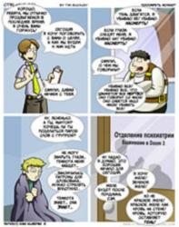
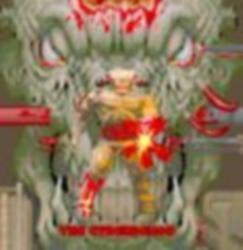
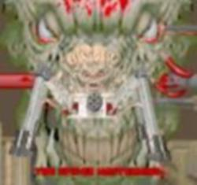

Компьютерная игра Doom — FPS, чертовски популярный в середине 90-х годов XX века (также известных как «времена поголовной заDOOMчивости»), фактически первый приличный и играбельный представитель всего направления мочилок. По количеству поклонников входит если не в первую тройку великих игр, то уж в первую десятку — точно. Обидным, однако, являлось то, что уже тогда появились и первые задроты.
Игра посвящена злоключениям американского морпеха, которого за неподчинение приказу сослали на Марс, где базировалась Обьединенная Аэрокосмическая Корпорация (UAC). Персональный адЪ. Корпорация занималась исследованием телепортации, и однажды создала Ворота, через которые, якобы, она транспортировала как грузы, так и пассажиров. Но однажды, эти Ворота были разрушены непонятно кем, и открылся портал не куда-нибудь, а прямо в адЪ и Израиль. Как это водится в заправских боевиках, наш герой остался один, и ему предстоит задача по возвращению Ворот обратно и предотвращению Большого Пиздеца. Однако прежде ему предстоит зарезать (с помощью бензопилы) и замочить легионы разномастных монстров и демонов, постоянно вылезающих из портала на горе всем живущим в нашем измерении.
После выпуска первой трехэпизодной части и восприятия её на ура геймерским сообществом Кармак сотоварищи выпустили продолжение — DOOM II. Затем был выпущен дополнительный эпизод к первой части. И, наконец, были выпущены два полноценных аддона левел-девелоперами из TNT Team. Всего официальных частей четыре (и один Shareware-эпизод — первый эпизод первой части):
Doom отметился многочисленными милыми монстриками, многие из которых послужили прототипами для других игр, а некоторые популярны по сей день.
DOOM был первым многопользовательским шутером. Он позволял игру по IPX-сети, по модему и по нульмодему (прямое соединение COM-портов между собой), последним вариантом иногда пользовались живущие недалеко друг от друга люди, принося в гости свой системный блок.
Сейчас, с развитием дешёвых, кошерных интернетов потребность в подобных надругательствах над своим телом отпала, но оказалось, что с современными ОС Дум несовместим абсолютно. Поэтому отдельными умельцами были сделаны порты, позволяющие играться в Дум в интернете.
DOOM оказал значительное влияние на компьютерный эпос той эпохи, став центральной темой в ставших классикой произведениях русской литературы и народном творчестве на разных языках мира[1]. Ещё существует песня, известная в определенных кругах как «Гимн думеров». В буржуйских интернетах особо известны два произведения: официальный комикс и неофициальный фанфик.
По вселенной DOOM было выпущено 4 романа, написанных известными новеллизаторами сериалов Дефидом аб Хью и Бредом Линавивером, из которых два было издано в России. Все четыре являются трешем и эпик фейлами, единственное, что заставляет дочитать эти быдлокнижки до конца — это заряд вина содержащийся в самой вселенной DOOM, описанной в них. Впрочем, сии высеры настолько безблагодатны, что даже вселенная игры не вытягивает их ни в коей мере. Дело усугубил прекрасный перевод, выполненный специально обученными овермайндами. Так, вполне понятный pump shotgun превратился в мозголомное «духовое ружье». Вот эта тетралогия:
По мнению одних, потому, что снимался по скучноватой 3-й части игры, а не по винрарным первым двум. А по мнению других, потому, что режиссер попросту погнался за двумя зайцами: попытался угодить как простому кинозрителю, так и задроту-геймеру, в результате не угодил ни тем ни другим. По словам задротов-геймеров, единственное, что в фильме доставляет — это резня бензопилой от первого лица. Кармак, как говорят, возмущался фильмом, но поделать ничего не мог. И вообще он занят куда более важными делами — готовит экспедицию на Луну.
Алсо, Пейсатель также засветился в списке заядлых думофагов. Ходит слух, что его роман «Лабиринт отражений» навеян сюжетом этой игры чуть менее, чем полностью. Однако, некоторые утверждают, что Дум всего лишь послужил прототипом для Арены в нескольких главах. Чего, кстати, Пейсатель никогда и не скрывал, даже более того, у него там так и написано!
кроме того, под влиянием (весьма очевидным) Дума явно снимался фильм «Призраки Марса». лютое трэш—кино, действие которого происходит на Марсе (совпадение!), где также принимает участие какая—то неведомая ебаная мистическая хуйня. собственно, демоны там не фигурировали, но люди, одержимые некоей неясного происхождения хренью, мигом начинали раскрашивать себе морды в страшный цвет и делать разный другой бодмод, отчего мигом становились на демонов похожи. также они действовали похоже на импов из дума: нагибали и пытались убивать все, что шевелится. фильм люто доставлял своей нарочитой трэшовостью и кровавостью. А еще потому, что его снимал Джон Карпентер.

Прохождение игры сулит непредвиденные последствия.
20 апреля 1999 года в пиндосской школе «Колумбина» двое школьников-задротов, обыгравшись в сабж, и накачавшись веществами, легким движением руки, сжимающей BFG9000 дробовик выпилили 13 своих сверстников и учителей, после чего вписали свои имена в книгу геройской славы. История породила нешуточную драму как в интернетах, так и IRL. Быдло сразу же во всем обвинило Кармака сотоварищи, мол, из-за ваших гадких стрелялок, дети убивают друг друга и пожирают за шведским столом. Более разумные же, более разбирющееся в сути, стали объяснять, что не вино виновато, а пьянство проклято это ваше воспитание, когда загнобленные быдлом хикки, подобно сжатой пружине, котрая распрямляясь, выносит КЕМ все на своем пути, сначала выплескивают свою злость на пиксельных монстров, а после уже могут взяться и за настоящее оружие.
Как выяснило следствие, один из ребят, Эрик Харрис, был фанатичным поклонником DOOM и других игр от id; известно несколько его уровней, которые отличаются повышенным содержанием крови и насилия. Ходила байка, что существует уровень, в точности повторяющий один из этажей школы, которая не подтвердилась. После событий в «Колумбине» большинство думерских сообществ, немедленно выпилили работы Эрика со страниц своих сайтов[2], что еще раз подтвердило известный тезис о 95%. Подобное желание оставаться белыми и пушистыми мы позже увидим в среде линуксоидов, сносящих ReiserFS со своих компьютеров. Такие дела.
Doom — игра, пережившая наибольшее количество портов. Спасибо товарищу Кармаку за счастливое детство и открытие сырцов дума. Правда без звука (без сырцов звуковой библиотеки, если быть точным), ибо копирасты не дремлют . По большому счёту, Дум есть на каждой приставке и на любом компе. (да, есть сборки и под Макось, и под Линукс, и даже под ZX Spectrum!. Из этого даже вырос самостоятельный локальный мем того же iddqd.ru и некоторых других дум-ресурсов:
«Ну когда уже на (тут можно вставить любое слово от «холодильник» до «лопата») выйдет?»
Во многом в этом виновны порты Дума на калькуляторы и фотоаппараты. Пруфлинк.
Олдфаги могут припомнить порт Doom на винрарной безвременно почившей консоли Panasonic 3DO. Конкретно этот порт отличался редкой уебищностью исполнения и считается одним из худших портов сабжа. Из характерных особенностей — мелкий размер экрана (всего 6 вариантов, причем чем больше экран, тем больше тормозило, а два последних, самых широких окна, открывались исключительно читом), игра НЕ сохраняла статус игрока, а только уровень, до которого пройдена игра (неприятно было оказаться на e2m9 с пистолетом и пачкой баронов Ада), ну и дико низкий FPS (по сравнению с другим эпическим шутером на 3DO, Killing Time). Спасал все это безобразие исключительно саундтрек — все темы оригинального Doom были перезаписаны, причем так, что ради него всю ущербность геймплея можно было вытерпеть.
Алсо, под портами в вопросе Думов подразумеваются всякие новые движки, позволяющие играть Дум в новых Виндах, часто с огромным количеством всяких мелких и крупных свистоперделок. К примеру, ещё в Legacy можно было прыгать и вращать голову мышой, в PrBoom появились «стёкла», JDoom позволил добавлять 3D модели, а также кастомные текстурпаки, паки и паки динамический свет[1], ZDoom добавил ещё кучу эффектов, а GZDoom дошёл до того позволил делать нормальные 3D-полы (то есть настоящие многоэтажные уровни), так как 3d-полы были еще в Legacy, и в GZDoom, который является сплавом ZDoom и Legacy, 3D-полы не являются новинкой. Правда, геморные варианты двух-этажных комнат были ещё в PrBoom, таки да. Есть ещё некий Vavoom, самый продвинутый порт Doom, правда так считает только продвинутый автор самого продвинутого порта Doom. Ещё сейчас многие порты поддерживают текстурпаки.
Ещё у Дума есть свой Скаарж (имеется в виду не расовый инопланетный монстр из Unreal`а, а расовый человеческий человек, создатель кошерных уровней к Half-Life) — его зовут Tormentor667. Известен, как автор уровней к UTNT, KDiZD и многих других вадов, отличившихся шикарным дизайном уровней.
Как и водится, школиё любит поводить холиворы и вокруг этих вадов. Одна половина считает вады полным и безоговорочным говном, другая, соответственно, считает, что эти вады — абсолютный эпичный вин
Олсо, благодаря усилиям нескольких пользователей эпичного сайта независимых Flash-разработчиков Newgrounds игра была с точностью чуть более чем полностью портирована на Flash наряду с Heretic и Hexen, также получивши там знаменитую свистоперделку (только для зарегистрированных, разумеется) с XBOX 360 — Achievements. Пруфлинк. Справедливости ради, надо отметить, что сделано это не на чистом Flash, а с использованием новенькой технологии Alchemy — штука позволяет комплировать С/С++ код в ActionScript. Отсюда сразу вытекло кой-какое платформо-зависимое ограничение — так как откомпилен тот порт был на little-endian машине (типа Intel’а), то на big-endian проце (типа PowerPC, что стоит у старых Маков) оно не запустится, даже не смотря на то что сам по себе Flash прекрасно работает.
Doom всё ещё жив, о чём говорит большое количество народу на разных форумах, ему посвящённых. Как всегда, форумы забиты нубьём, которые пытаются делать новые карты (судя по тому, что они делают, они дум даже не запускали до этого), другие оставляют очень полезные и интересные комментарии. Это ещё раз доказывает, что тематика форума мало связана с количеством малолетних долбоёбов, живущих на нём. типичные обсуждаемые вопросы
На Думворлде существует такая забава, как награждение новых карт для Дума и их авторов. Награды(Каковарды) получают 10 вадов, после чего начинаются вечные срачи на тему «Ваду XXX дали каковард, а моему не дали, вот сволочи!» и «Поиграл я в каковардный YYY, такое дерьмо я вам скажу! уж лучше-б выбрали ZZZ». Интересными номинациями являются «Worst map» и «mock map» — Самой худшей карте выдаётся дохлый кака, а самой забавной — очень довольный кака с разбухшим ЧСВМПХ
Вышедшая в августе 2004 года, как не трудно догадаться, стала объектом срачей между проклятым нубьём и олдфагами. Причём стала ещё до выхода (возможно, анонимус намекает на кагбэ украденную пиратами прямо из лабораторий UAC со стола Кармака альфа-версию). По выходу же количество срача с лёгкостью перемахнуло заветную отметку и продолжало увеличиваться. Кое где до сих пор идут холиворы, причём, в основном на тему «Старый Дум был с Драйвом, а новый — Унылое Говно». Самое интересное, что во многом в подобных холиварах на стороне олдфагов выступает школиё, играющее в гоззо с ОпенГЛ и шейдерами, и никак не желающее играть в Ваниллу.
На самом деле игра получилась совсем не такой плохой, как утверждают ждавшие лютого экшона олдфаги и толпы восторженной от Half-Life 2 школоты. Между прочим, холивары «Half-Life 2 vs. Doom 3» возникали едва ли не чаще, чем «Старый Doom vs. Новый». Некоторых пугливых личностей игра даже заставляла срать кирпичами, благодаря чему они её называли не иначе, как хоррором.
Основными аргументами против являются:
После того, как Кармак объявил о том, что официально работает над Doom 4, холивары обновились с новой силой, едва ли не перебив по крутизне срачи о третьей части. А так как попутно ID разрабатывают Rage, в которой половину геймплея составляют гоночки, а саму игру начала создавать EA, не трудно догадаться, ЧТО случилось с Думерастами старой закалки.
Впрочем, когда стало известно, что теперь ID принадлежит ZeniMax, так что именно издатели Обливиона и Фоллаута 3 будут выпускать новые игры от Кармака, полного ненависти школия набижало опять 9000. Срачей пока что не так много, но, чует анонимус, скоро будет больше.
Срачи гремят уже во всю, и в самых неожиданных местах: id Software, возможно, откажется от поддержки Linux. Уже отказалось (Хотя, может и не отказались) — новый красноглазый срач.
Также существует винрарная версия Doom’а 2 в 2d-графике (вид сбоку), написанная Prikol Software в 97-м году. Вин, по сравнению с остальными вариантами двумерного дума. Отличалась возможностью играть вдвоем за одним компьютером, в силу чего пользовалась популярностью у тех, кто не мог наслаждаться игрой по сети, и сильной замороченностью уровней по сравнению с оригиналом. Встроенных карт для дефматча было всего две, как следствие задрачивались они до такой степени, что некоторые личности могли попасть из любого оружия в любую точку карты если это было физически возможно. Второе следствие было в массовом клепании своих уровней, благо был удобный встроенный редактор. Особенно много лулзов доставляло сделать невидимую дырку в полу и наблюдать как ваш оппонент проваливается через нее в невидимый же резервуар с кислотой, или на знакомой карте запустить во всем знакомый подводный переход десятка два пираний. Феерический восторг гарантирован.
Доработка Doom2d в другой версии ведется и сейчас по адресу http://doom2d.org/ Ну а если хотите поиграть по мультиплееру, то идите вы нахуй http://doom2dmp.heliohost.org
Вы таки будете смеяться, но по Doom существует рогалик. Невозбранно скачать сие творение можно тут.
Из какого-то форума:
1. как сессия?
2. в бородатые времена компания id software, еще до выхода doom и quake выпустила легендарную игру wolfenstein, я в нее еще на 386ом рубился. Самое страшное в ней было когда у тебя жизни процентов 10, 5 патронов, ты заходишь в лабирит, где в тебя со всех сторон хуячат арийцы, а ты с усрачки нажимаешь save… тогда приходилось резко разворачиваться назад и бежать, бежать, чтоб тебя не замочили, выбегать из лабиринта с 1 м процентом жизни, нажимать на save, и снова бежать за аптечкой и патронами. с первого раза редко получалось
1. дак как с сессией у тебя
2. бля, я ж объяснил вроде

Тот самый кибердемон.

Спайдер мастер майнд, и то, где находится его майнд.
{kind=link}
{kind=link}
{kind=link}
{kind=link}